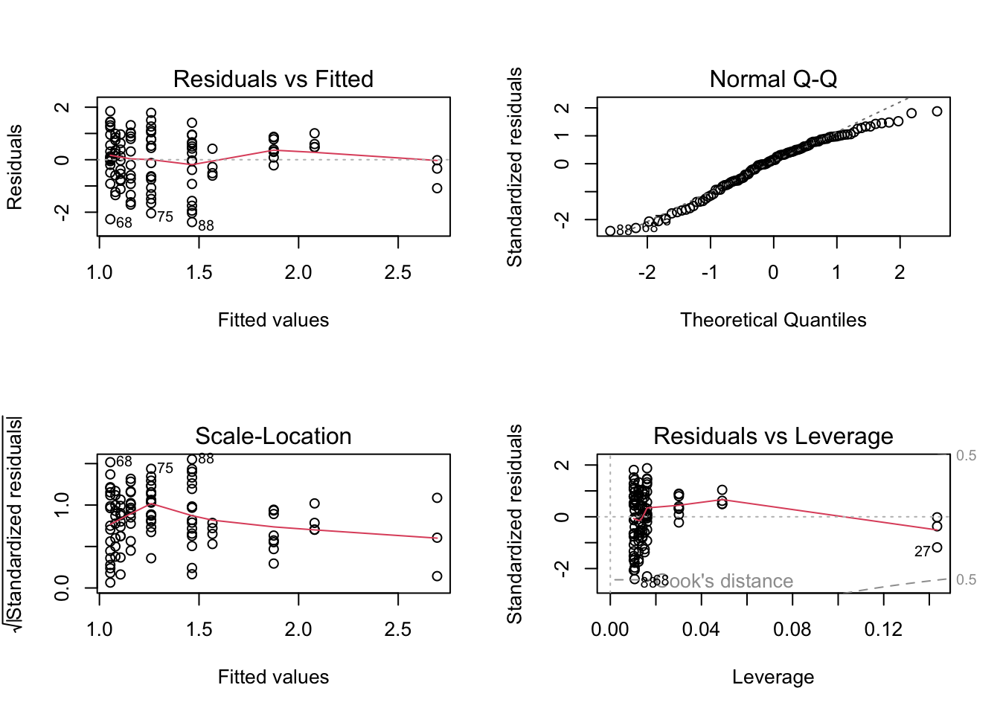
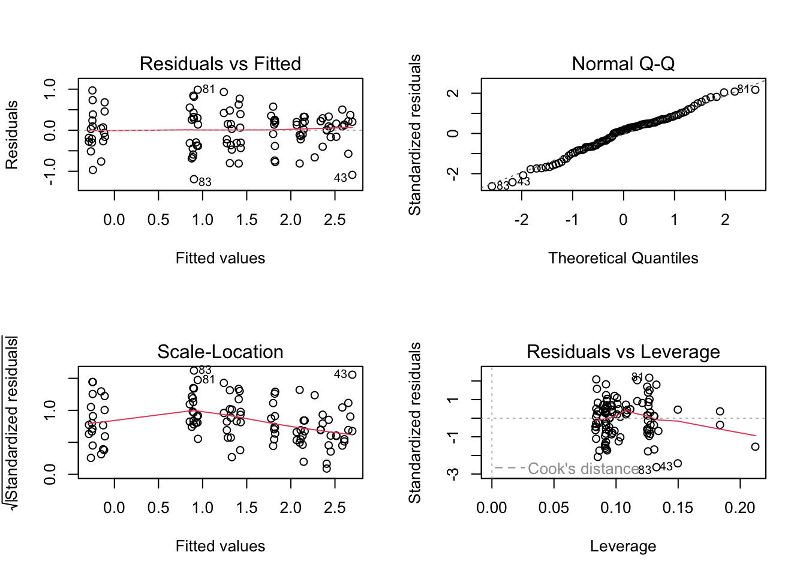
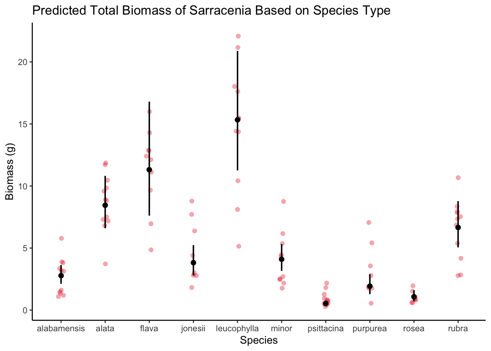

Sarracenia, commonly known as pitcher plants, are a group of carnivorous plants native to North America that have evolved specialized pitcher-shaped leaves that trap and digest insects as a source of nutrients. Sarracenia species play a crucial role in nutrient cycling and food web dynamics within their habitats, and their aesthetic appeal and insect-trapping capabilities have attracted horticulture interest both for botanical and private gardens (Gotelli & Ellison, 2002). In this analysis, we aim to predict individual biomass in Sarracenia plants using morphological, physiological, and taxonomic characteristics. Plant biomass is a recycler of atmospheric carbon and can be used to assess the impact of plants relation to the global carbon cycle, helps quantify ecosystem productivity, show the strategies used for plant survival, etc. (Parresol, 2002). Investigating the relationship between Sarracenia characteristics and biomass can provide valuable information about plant growth, resource allocation, ecological interactions, and ecosystem functioning. The key questions addressed in this analysis include: What morphological, physiological, and taxonomic traits are most strongly correlated with individual biomass in Sarracenia? Are there any specific traits that consistently emerge as strong predictors across different Sarracenia species or populations? Based on previous studies, species type and prey capture have shown significant correlation to biomass, and may be important predictors(Green & Horner, 2007; Ellison et al., 2012). Our null hypothesis was that no morphological, physiological, nor taxonomic characteristics will have a statistically significant correlation to biomass; our alternative hypothesis was that one of the variable characteristics would have a statistically significant correlation to biomass in Sarracenia. Overall, this analysis will contribute to our understanding of the factors driving the growth and biomass accumulation in Sarracenia plants. The findings may have implications for conservation efforts, horticultural practices, and ecological studies focused on carnivorous plants.
Methods
In a regression design, two plants from each Sarracenia species, with a total of 120 plants included, were assigned to six feeding levels: 0-0.25g for small species, 0-0.5g for intermediate sizes, and 0-1.0g for large species(Ellison & Farnsworth, 2021). Aboveground size and photosynthetic rate (Amass) were measured prior to treatment initiation and the plants were fed once a week for 7 weeks(Ellison & Farnsworth, 2021. The data was imported using [here] into the “plant” dataset, which was then cleaned using [clean_names] and subsetted to include the desired columns (totmass, species, feedlevel, sla, chlorophyll, amass, num_lvs, and num_phylls). Missing data was visualized using [gg_miss_var], revealing that there were 18 missing values for both chlorophyll and photosynthetic rate (amass), 10 missing values for specific leaf area(sla), and 2 missing values for both total number of pitchers and phyllodes per plant(num_lvs) and number of phyllodes per plant(num_phylls). The data set was subsetted to remove the “NA’s” that indicated the missing data, since the variables, in part, were being modeled together and required all entries to be there for the most accuracy. Pearson’s correlation coefficient r was calculated to reveal the correlations between the numerical variables, and a correlation plot visually displayed the results. Sla and amass had a positive correlation, but sla and feed level, sla and num_phylls, and num_lvs and amass all had negative correlations. The highest correlation coefficient was 0.32 between sla and amass, which is still a fairly weak correlation. To explore the relationships between the variables beyond just correlation, a pairs plot was used. Sla appeared to have a decreasing, exponential decaying relationship with both num_phyllus and feed level, with sla increasing and num_phyllus and feed level decreasing rapidly (independent of each other).
The null hypothesis that none of the variables were predictors of total biomass was tested against by creating a null model, which is specified by using 1 as the predictor instead of any actual variables. To test the impact of all the variables as a predictor of total biomass, a full model was created, inclusive of all the variables as the predictor. Diagnostic plots were used to visually assess normality and homoscedasticity, which appeared to have uneven variance based on the cone-shaped spread in the Residuals vs. Fitted plot, and normality was difficult to determine visually. A Shapiro-Wilk test was used to test normality with the null hypothesis that the residuals are normally distributed, and it determined non-normality. A Breusch-Pagan test was used to test homoscedasticity, assuming a null hypothesis of constant variance (homoscedasticity), and it came back heteroscedastic. Since the assumption checks failed, the response variable was transformed to make the residuals normal and homoscedastic by taking the log 10 of the null and full models. Upon rechecking normality and homoscedasticity via diagnostic plot, Shapiro-Wilk, and Breusch-Pagan tests, the response variable came back as normal and homoscedastic. We evaluated multicollinearity of the full model by calculating generalized variance inflation factor (GVIF) and determined that the model didn’t show multicollinearity as all the GVIF values were below 5, a threshold value for multicollinearity that wasn’t met.
To determine the best suited predator variable for biomass, 3 more test models were made. Each model was tested for normality and homoscedasticity through diagnostic plots, Shapiro-Wilk, and Breusch-Pagan tests, and all models came back normal and homoscedastic. The first test model, model 2, used species as the predictor variable since large diversity can occur between species, especially with size and therefore biomass. Model 3 used feed level as the predictor variable to biomass because the amount of food consumed for organisms often directly correlates to the size of it. We wanted to see if feed level independently predicted biomass of Sarracenia as it often does with other organisms. For the final model tested, model 4, both species and feed level were tested together as the predictor variable to biomass in Sarracenia. Both variables were hypothesized to impact biomass, but we wanted to compare their predictability together of biomass to them each independently, as well as to the full model, to gain a better understanding of how each variable works together(or not). We compared all of the models using Akaike’s Information Criterion (AIC) values and chose the model with the lowest value as the predictor variable, which was the full model with an AIC of 133.94. Species, feed level, and species + feed level had AIC values of 157.58, 294.98, and 159.62 respectively.
Data Organizing and Processing
Loading packages needed in
Code
#loading all packages neededlibrary(tidyverse)library(here)library(janitor)library(ggeffects)library(performance)library(naniar)library(ggplot2)library(flextable)library(car)library(broom)library(corrplot)library(AICcmodavg)library(GGally)library(MuMIn)library(corrplot)
Reading in data and organizing using [here] package.
Code
plant <-read_csv(here("data", "knb-lter-hfr.109.18","hf109-01-sarracenia.csv")) %>%#make column names cleanerclean_names() %>%#selecting the columns of interestselect(totmass, species, feedlevel, sla, chlorophyll, amass, num_lvs, num_phylls)
Visualizing the missing data from “plants” by using [gg_miss_var]. Variables chlorophyll, amass, sla, num_phylls, and num_lvs have missing data.
Code
# create a data visualization of missing data in plantsgg_miss_var(plant)
Figure 1. Visual checks for missing data. Missing data visualization with variables on the y axis and # of missing data on the x axis. Dots representative of total missing number.
Sub-setting data by dropping the NA’s using [drop_na] function:
To determine the relationships between numerical variables in our data set, we calculated Pearson’s r and visually represented correlation using a correlation plot:
Code
#calculate pearsons r only for numeric values onlyplant_cor <- plant_subset %>%select(feedlevel:num_phylls) %>%cor(method ="pearson")#creating a correlation plotcorrplot(plant_cor,#change the shape of what's in the cells#angle of ellipse shows relationship: all pointing to right is positive, to left is negativemethod ="ellipse",addCoef.col ="black")
Figure 2. Correlation Plot with Pearson’s r. Correlation plot of the relationships between numerical values(on x and y axis) in our data set using Pearson’s r(color coded numbers between variables). Positive/negative relation between variables shown by ellipse angle direction.
Pairs plot using [ggpairs] used to compare each variable to the other, each in their own plot:
Code
# create a pairs plot (not correlation) for all of the variablesplant_subset %>%select(species:num_phylls) %>%ggpairs()
Figure 3. Pairs Plot. A plot for each variable compared to the other. Variable names are displayed on the right and top outer edge, and various plots(density, scatter, etc.) are displayed depending on independent and dependent variable. Pearson’s r correlation is also displayed. This shows us both the correlation between two variables and the distribution of each variable.
Starting regression here:
In order to determine the predictability of different species and physiological characteristics on biomass, we fit multiple linear models.
Code
# making a null model, which is specified by using one as the predictor, since there are no actual predictors, and only wanting it from the plant_subset data set. null <-lm(totmass ~1, data = plant_subset)# now all variables are includedfull <-lm(totmass ~ species + feedlevel + sla + chlorophyll + amass + num_lvs + num_phylls, data = plant_subset)
Visually assessing the data for normality and homoskedasticity of residuals using diagnostic plots for full model:
Code
# create a diagnostic plot for full modelpar(mfrow =c(2,2))plot(full)
Figure 4. Diagnostic Plots for Full Model. Testing all variables as predictors to biomass. Residuals are represented by points in all plots. Red lines (residuals vs fitted, scale-location, and residuals vs leverage plots) indicate patterns in the residuals. Reference lines are depicted as grey dashed lines.
The normality of the variable of interest (i.e., the residuals) was also assessed using the Shapiro-Wilk test, with the null hypothesis being that the residuals are normally distributed.
Code
check_normality(full)
Warning: Non-normality of residuals detected (p < .001).
To examine heteroskedasticity, the Breusch-Pagan test was employed, assuming a null hypothesis of constant variance for the variable of interest.
Transform the response variable taking log 10 to transform residuals and check for normality and variance:
Code
# transform data by taking log of itnull_log <-lm(log(totmass) ~1, data = plant_subset)full_log <-lm(log(totmass) ~ species + feedlevel + sla + chlorophyll + amass + num_lvs + num_phylls, data = plant_subset)# check transformed data for normality and constant variance visuallypar(mfrow =c(2,2))plot(full_log)
Figure 5. Diagnostic Plots for (Log of)Full Model. Testing the log of full model(all variables) as predictor to biomass. Residuals are represented by points in all plots. Red lines (residuals vs fitted, scale-location, and residuals vs leverage plots) indicate patterns in the residuals. Reference lines are depicted as grey dashed lines.
Shapiro-Wilk test and Breusch-Pagan test for additional testing of normality and constant variance.
Code
check_normality(full_log)
OK: residuals appear as normally distributed (p = 0.107).
Code
check_heteroscedasticity(full_log)
OK: Error variance appears to be homoscedastic (p = 0.071).
Question: what predictor set of variables best explore the response?
Model 2
Modeling species as a predictor of biomass
Code
# create a model with species predicting biomass(totmass)model2_log <-lm(log(totmass) ~ species, data = plant_subset)
Checking assumptions for Model 2
Visually assessing the data for normality and homoskedasticity of residuals using diagnostic plots for Model 2:
Code
# plot the diagnostics for this modelpar(mfrow =c(2,2))plot(model2_log)
Figure 6. Diagnostic Plots for Model 2. Testing species as predictor variable to biomass. Residuals are represented by points in all plots. Red lines (residuals vs fitted, scale-location, and residuals vs leverage plots) indicate patterns in the residuals. Reference lines are depicted as grey dashed lines.
Shapiro-Wilk test and Breusch-Pagan test for additional testing of normality and constant variance in Model 2:
Code
check_normality(model2_log)
OK: residuals appear as normally distributed (p = 0.374).
Code
check_heteroscedasticity(model2_log)
OK: Error variance appears to be homoscedastic (p = 0.100).
Model 3
Modeling feed level as a predictor of biomass
Code
# create a model comparing feedlevel and totmassmodel3_log <-lm(log(totmass) ~ feedlevel, data = plant_subset)
Checking assumptions for Model 3
Visually assessing the data for normality and homoskedasticity of residuals using diagnostic plots for Model 3:
Code
# plot diagnostics for this modelpar(mfrow =c(2,2))plot(model3_log)

Figure 7. Diagnostic Plots for Model 3. Testing feed level as predictor variable to biomass. Residuals are represented by points in all plots. Red lines (residuals vs fitted, scale-location, and residuals vs leverage plots) indicate patterns in the residuals. Reference lines are depicted as grey dashed lines.
Shapiro-Wilk test and Breusch-Pagan test for additional testing of normality and constant variance in Model 3:
Code
check_normality(model3_log)
Warning: Non-normality of residuals detected (p = 0.018).
Code
check_heteroscedasticity(model3_log)
OK: Error variance appears to be homoscedastic (p = 0.261).
Model 4
Modeling total number of pitchers and phyllodes per plant as a predictor of biomass
Code
# create a model with num_phylls predicting totmassmodel4_log <-lm(log(totmass) ~ species + feedlevel, data = plant_subset)
Checking assumptions for Model 4:
Visually assessing the data for normality and homoskedasticity of residuals using diagnostic plots for Model 4:
Code
par(mfrow =c(2,2))plot(model4_log)

Figure 8. Diagnostic Plots for Model 4. Testing just total number of pitchers and phyllodes per plant as predictor variable to biomass. Residuals are represented by points in all plots. Red lines (residuals vs fitted, scale-location, and residuals vs leverage plots) indicate patterns in the residuals. Reference lines are depicted as grey dashed lines.
Shapiro-Wilk test and Breusch-Pagan test for additional testing of normality and constant variance in Model 4:
Code
check_normality(model4_log)
OK: residuals appear as normally distributed (p = 0.339).
Code
check_heteroscedasticity(model4_log)
OK: Error variance appears to be homoscedastic (p = 0.110).
Model Comparison
Compare models using Akaike’s Information Criterion (AIC) values:
Code
AICc(full_log)
[1] 133.9424
Code
AICc(model2_log)
[1] 157.5751
Code
AICc(model3_log)
[1] 294.978
Code
AICc(model4_log)
[1] 159.6218
Code
AICc(null_log)
[1] 306.0028
Code
# comapre this model aganst null and full AIC valuesMuMIn::AICc(full_log,model2_log, model3_log, model4_log, null_log)
The full model was the best model for predicting biomass in Sarracenia, chosen by having the lowest AIC value in comparison to the rest of the models, indicating a good balance between model fit and complexity. The model results show that it has a p-value less than 0.001, F-statistic of 38.38, degree of freedom of 87, and an adjusted R-squared value of 0.8461. The null hypothesis that none of the variables would be predictors of biomass in Sarraceina was rejected, and we instead accept the alternative hypothesis that at least one of the variables was a predictor for biomass, in this case all of the variables together was best. This model did conform to the assumptions of normality and homoskedasticity when it was transformed by taking the log 10. This model included species, feed level, specific leaf area, chlorophyll, photosynthetic rate, number of pitchers and phyllodes per plant, and number of phyllodes per plant, and its successes as a model makes sense as it gives a full picture of the plant. This model displays that when the individual predictor factors are working together, they have a bigger effect on the biomass, which is further evident by comparing Model 2 and 3 to Model 4. Species of Sarracenia clearly does play a role on biomass, with the different species having vastly different biomass estimates, leucophylla at the highest and psittacina the lowest. Different species obtain different adaptations based on environmental conditions that directly affect their size, and therefore biomass, but other variables are also always at play. The uniqueness of the plant being carnivorous creates for lots of variables working together and against each other, which entices us for future research into understanding their biological phenomenons.
table <-tidy(full_log, conf.int =TRUE) %>%#round all columns to have only 3 digits after the decimalmutate(across(estimate:conf.high, ~round(.x, digits =3))) %>%# round the F-statistic to have 1 digitmutate(statistic =round(statistic, digits =1)) %>%# replace the very very very small p value with < 0.001mutate(p.value =case_when( p.value <0.001~"<0.001" )) %>%# make row names meaningfulmutate(term =case_when( term =="speciesalata"~"Species Alata", term =="speciesflava"~"Species Flava", term =="speciesjonesii"~"Species Jonesii", term =="speciesleucophylla"~"Species Leucophylla", term =="speciesminor"~"Species Minor", term =="speciespsittacina"~"Species Psittacina", term =="speciespurpurea"~"Species Purpurea", term =="speciesrosea"~"Species Rosea", term =="speciesrubra"~"Species Rubra", term =="feedlevel"~"Feed Level", term =="sla"~"Specific Leaf Area", term =="chlorophyll"~"Chlorophyll", term =="amass"~"Photosynthetic Rate", term =="num_lvs"~"# of Pitchers and Phyllodes per Plant", term =="num_phylls"~"# of Phyllodes per Plant",TRUE~ term )) %>%# make the data frame a flextable objectflextable() %>%# make meaningful header labelsset_header_labels(term ="Term",estimate ="Estimate",std.error ="Standard Error",statistic ="F-statistic",p.value ="p-value",conf.low ="Low Confidence",conf.high ="High Confidence") %>%# fit it to the viewerautofit()table
Term
Estimate
Standard Error
F-statistic
p-value
Low Confidence
High Confidence
(Intercept)
-1.339
0.598
-2.2
-2.527
-0.151
Species Alata
1.113
0.184
6.0
<0.001
0.747
1.479
Species Flava
1.405
0.263
5.3
<0.001
0.882
1.927
Species Jonesii
0.320
0.196
1.6
-0.071
0.710
Species Leucophylla
1.709
0.228
7.5
<0.001
1.257
2.161
Species Minor
0.389
0.188
2.1
0.016
0.763
Species Psittacina
-1.645
0.207
-7.9
<0.001
-2.057
-1.234
Species Purpurea
-0.364
0.254
-1.4
-0.870
0.141
Species Rosea
-0.947
0.260
-3.6
<0.001
-1.465
-0.430
Species Rubra
0.875
0.196
4.5
<0.001
0.485
1.266
Feed Level
-0.474
0.234
-2.0
-0.940
-0.008
Specific Leaf Area
-0.002
0.001
-2.1
-0.005
0.000
Chlorophyll
0.004
0.001
3.7
<0.001
0.002
0.007
Photosynthetic Rate
0.002
0.003
0.8
-0.004
0.008
# of Pitchers and Phyllodes per Plant
0.092
0.022
4.1
<0.001
0.047
0.136
# of Phyllodes per Plant
-0.040
0.052
-0.8
-0.142
0.063
Model Predictions
Code
# use ggpredict to make a model prediction using the full model, making sure to backtransform from log 10model_pred <-ggpredict(full_log, terms ="species", back.transform =TRUE)# plot the predicted data model_plot <-plot(model_pred, add.data =TRUE) +# changing theme and make meaningful labelstheme_classic() +labs(x ="Species", y ="Biomass (g)", title ="Predicted Total Biomass of Sarracenia Based on Species Type") model_plot

Figure 9. Species as Predictor for Biomass. Model predicitons using species as predictor variable on x axis of total biomass measured in grams on y axis. Dots represent each data sample per species, with mean and standard error laid atop of data via error bars.
References
Butler, J. L., Gotelli, N. J., & Ellison, A. M. (2004). Linking the brown and green: nutrient transformation and fate in the Sarracenia microecosystem. Ecology, 85(12), 898-902. https://pubmed.ncbi.nlm.nih.gov/18481512/
Ellison, A. M., Butler, E. D., Hicks, E. J., Naczi, R. F., Calie, P. J., Bell, C. D., & Davis, C. C. (2012). Phylogeny and biogeography of the carnivorous plant family Sarraceniaceae. PloS one, 7(6), e39291. https://doi.org/10.1371/journal.pone.0039291
Ellison, A. M. & Farnsworth. E. (2021). Effects of Prey Availability on Sarracenia Physiology at Harvard Forest 2005 ver 18. Environmental Data Initiative. https://doi.org/10.6073/pasta/26b22d09279e62fd729ffc35f9ef0174
Gotelli, N.J. and Ellison, A.M. (2002). NITROGEN DEPOSITION AND EXTINCTION RISK IN THE NORTHERN PITCHER PLANT, SARRACENIA PURPUREA. Ecology, 83: 2758-2765. https://doi.org/10.1890/0012-9658(2002)083[2758:NDAERI]2.0.CO;2 https://doi.org/10.1111/j.1365-2435.2007.01307.x
Green, M.L., & Horner, J.D. (2007). The Relationship Between Prey Capture and Characteristics of the Carnivorous Pitcher Plant, Sarracenia Alata Wood.The American Midland Naturalist, 158(2): 424-431. https://doi.org/10.1674/0003-0031(2007)158[424:TRBPCA]2.0.CO;2
Parresol, B. R. (2002). Biomass. Encyclopedia of Environmetrics, 1, 196-198. https://www.srs.fs.usda.gov/pubs/ja/ja_parresol010.pdf